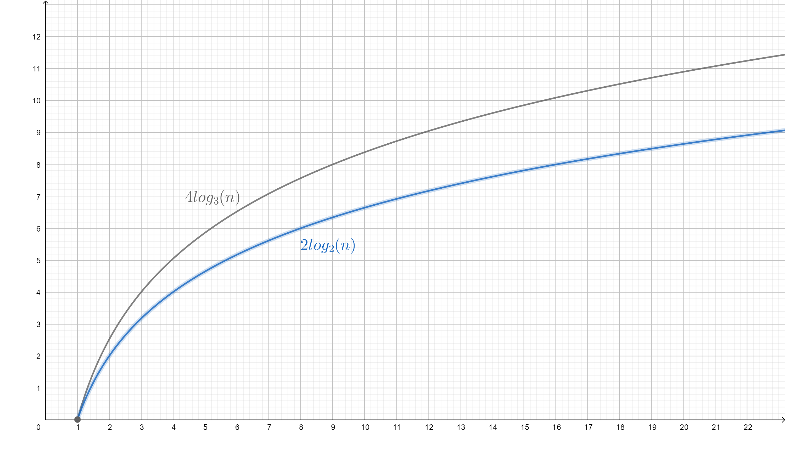

Searching¶
Algorithms that are used to check for the presence of an element in an array and retrieve its index.
Warning
Some algorithms require the array to be sorted forehead. If pre_check is set to False and arr is not sorted, an unexpected result will be returned.
- pydsa.algorithms.searching.binary_search(arr, target, pre_check=True)¶
Search a sorted array by repeatedly dividing the search interval in half.
- Two prerequisites to use this algorithm:
The array must be in sorted order.
The array has constant time random access e.g. linked list is not suitable for this algorithm.
Time complexity:
O(log n).Space complexity:
O(1).
- pydsa.algorithms.searching.exponential_search(arr, target, pre_check=True)¶
Search exponentially to find the range where
targetmay be present and dobinary_search()in the range.Time complexity:
O(log n).Space complexity:
O(1).
- pydsa.algorithms.searching.interpolation_search(arr, target, pre_check=True)¶
An improvement over
binary_search()for instances, where the values in a sorted array are uniformly distributed.Time complexity:
O(log log n).Space complexity:
O(1).Note
Mechanism behind interpolation search
Inbinary_search(), we take the average of two pointers i.e.startandendto find the middle of the array.interpolation_search()improves on this by using the formula:\[ \begin{split} pos = start+\frac{(end-start)\times(target-arr[start])}{arr[end]-arr[start]} \end{split} \]The idea of the formula is to return higher value of position when the element to be searched is closer to the end of the array or vice versa.
Suppose that we have an array that contains elements that have linear relationship with their indices (the array is said to be uniformly distributed). Therefore, we can construct a formula \(f(x)=mx+c\) that maps an index toarr[x].
Let’s say that we have two points i.e. \(A=(x_a,f(x_a))\) and \(B=(x_b,f(x_b))\) and we want to find a \(x\) that maps totarget. (Note: \(x_a<x<x_b\)) Since three points are lied on the same line, gradient of point \(A\) and point \((x,f(x))\) must be equal to gradient of point \(A\) and point \(B\). thus, an equation can be formed:\[ \begin{split} \frac{f(x_b)-f(x_a)}{x_b-x_a} &= \frac{f(x)-f(x_a)}{x-x_a} \\ x &= x_a + \frac{(x_b-x_a)\times(f(x)-f(x_a))}{f(x_b)-f(x_a)} \end{split} \]In most of the real-life cases, we can’t form a relationship between indices and elements. However, if it uniformly distributed, graph of \(f(x)\) will more likely to be a straight line and the formula will be more efficient.
- pydsa.algorithms.searching.jump_search(arr, target, pre_check=True)¶
Search a sorted array by jumping ahead by fixed steps (\(\sqrt{n}\) is optimum, where \(n\) is the length of array).
This algorithm is less efficient than
binary_search(), but it can be used in a system where binary search is costly e.g. in the case thattargetis an extreme value inarr.Time complexity:
O(sqrt n).Space complexity:
O(1).Note
Why the optimal block size is \(\sqrt{n}\) ?
Consider an array with size of \(n\) and a block size \(m\). The worst case is when the value we want to search for is the last element in the array. We need \(\frac{n}{m}+m-1\) steps: \(\frac{n}{m}\) jumps to reach at the block where the value is located and another \(m-1\) steps to search linearly in the block.
The expression is minimal when the gradient is 0. We differentiate the expression respect to \(m\):\[ \begin{split} \frac{\delta}{\delta m}(\frac{n}{m}+m-1) &= 0 \\ -\frac{n}{m^2}+1 &= 0 \\ \frac{n}{m^2} &= 1 \\ m^2 &= n \\ m &= \sqrt{n} \end{split} \]
- pydsa.algorithms.searching.linear_search(arr, target)¶
Search sequentially from left to right.
This algorithm functions well when
arris not sorted. It takesO(n log n)to sort an array and the efficiencies of other searching algorithms decrease because of this.Time complexity:
O(n).Space complexity:
O(1).
- pydsa.algorithms.searching.ternary_search(arr, target, pre_check=True)¶
Similar to
binary_search(), this algorithm search a sorted array by repeatedly dividing the search interval into three parts.Time complexity:
O(log3 n).Space complexity:
O(1).Note
ternary_search()is less preferable overbinary_search(). Why?
In short,ternary_search()makes more comparisons (means more time is needed!) in worst case.
We need at most \(4\lfloor\log_3 n\rfloor\) comparisons in ternary search but \(2\lfloor\log_2 n\rfloor\) comparisons in binary search.
Comparison between the performances
binary_search()andternary_search(). (For simplicity, floor functions are not plotted) ¶
ternary_search()actually adds complexity to the implementation, that’s why you seldom use quaternary search or k-nary search for any other higher order.